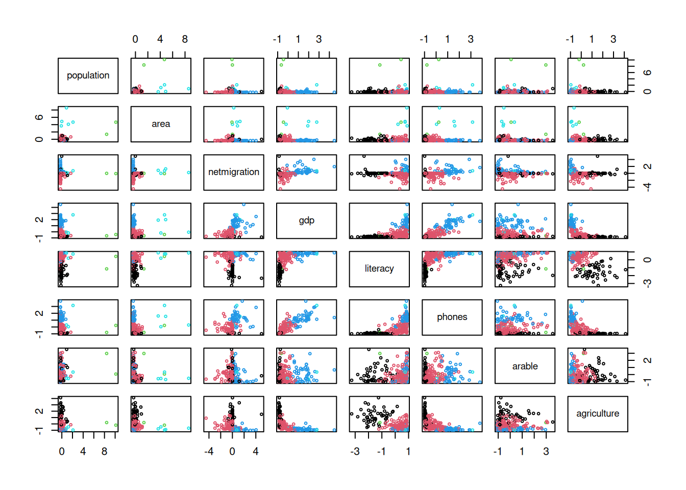
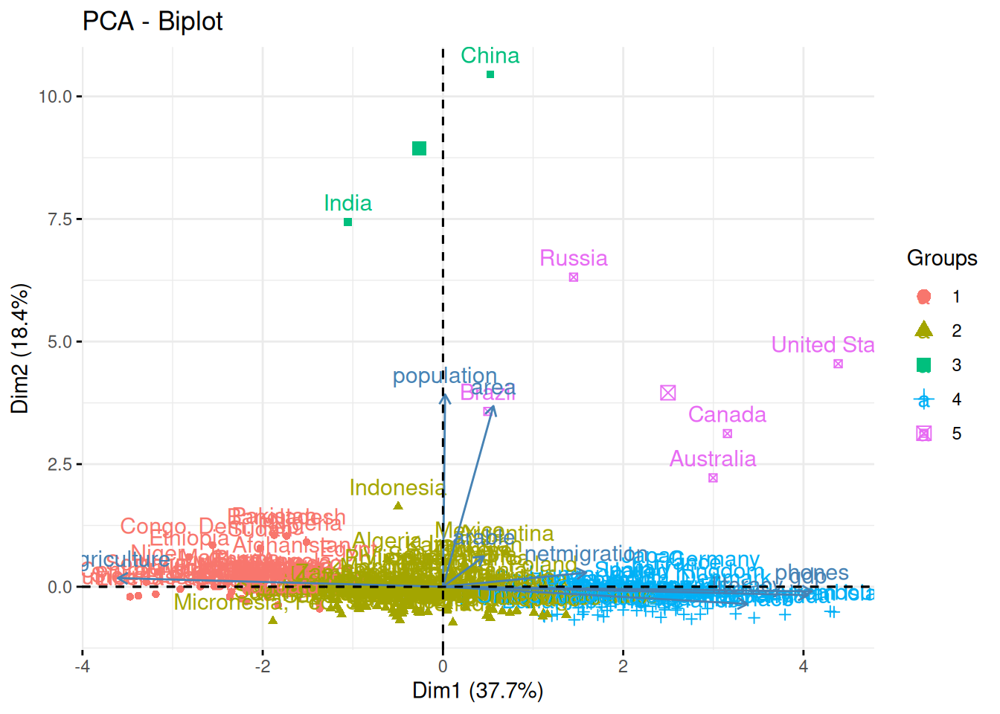
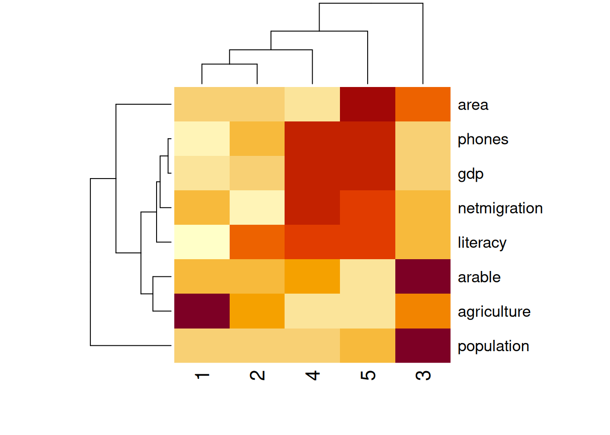
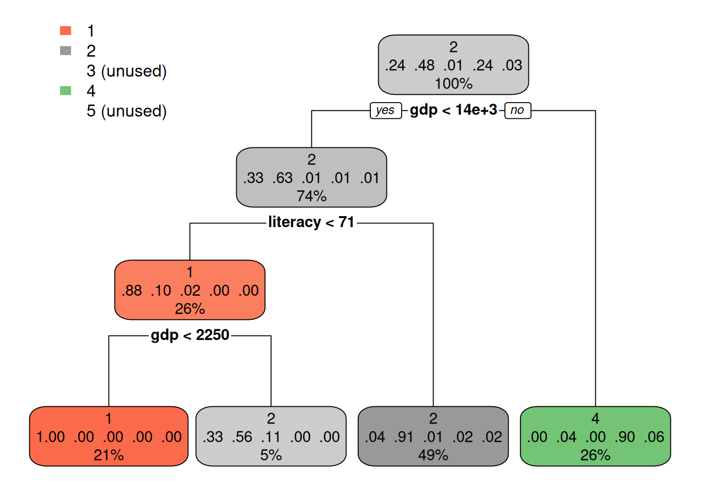

library('magrittr')
riigid <- read.csv('andmed/countries.csv')
rownames(riigid) <- riigid$country
riigid %<>% na.omit
# Eralda arvtunnused
arvtunnused <- riigid[, sapply(riigid, is.numeric)]
arvtunnused %<>% scale
# Määra klastrid
set.seed(0)
kkesk <- kmeans(arvtunnused, centers = 5, nstart = 50)
klastrid <- kkesk$cluster17 Klasterdamine
Klasterdamise käigus jaotatakse objektid rühmadesse selliselt, et ühes rühmas olevad objektid on rohkem sarnased üksteisega kui teistes rühmades olevate objektidega. Nendeks objektideks on enamasti vaatlused, aga klasterdada saab ka tunnuseid. Tunnuste klasterdamisel võivad olla aluseks vaatlused, seosekaardi puhul aga nt tunuste korrelatsioonid teiste tunnustega (Peatükk 19). Vaatluste sarnasust hinnatakse selle järgi, kui palju erinevad nende vaatluste mingite tunnuste väärtused.
Klastritesse jaotamine põhineb tavaliselt mitme tunnuse väärtustel, aga vaatlusi saab klasterdada ka ühe tunnuse alusel. Klastrite aluseks olevad tunnused peavad olema mõõdetud arvskaalal. Ka nimitunnuste alusel saab vaatlusi klasterdada, aga nende põhjal sarnasuse hindamiseks tuleb need esmalt arvskaalale teisendada.
Mõiste
Klasterdamine (clustering) on objektide klastritesse määramine nende objektide sarnasuse alusel. Enamasti on nendeks objektideks vaatlused ja sellisel juhul on tekkivates klastrites üksteisega valitud tunnuste väärtuste alusel sarnased vaatlused nii, et sarnasus klastrite sees on suurem kui klastrite vahel.
Sarnaselt klassifitseerimisega on ka klasterdamise tulemuseks vaatluste jagunemine rühmadesse. Siiski on tegemist põhimõtteliselt erinevate ülesannetega. Klasterdamise puhul ei ole tegelikud rühmad teada ja me ei saa seega hinnata ka selle tegevuse täpsust. Kui klassid esindavad enamasti tähenduslikke kogumeid, siis klasterdamise korral peame tekkinud klastritele ise tähenduse omistama.
Klasterdamine ei ole üks konkreetne protseduur, vaid pigem ülesanne, mille lahendamiseks on palju erinevaid viise. Kuivõrd klasterdamise tulemus sõltub valitud protseduurist ja selle rakendamise parameetritest, siis on iga klasterdamise teel saadud objektide jaotamine rühmadesse vaid üks paljudest võimalikest. Nii ei paku klasteranalüüs erinevalt paljudest teistest andmeanalüüsi tegevustest unikaalset lahendust, mistõttu klasterdamise tulemust ei käsitleta sageli teaduslikuna. Klasterdamist saab kasutada aga nt andmete paremaks mõistmiseks enne edasist analüüsi (exploratory data analysis), vaatluste olemuse määratlemiseks (profiling) või erindite tuvastamiseks (anomaly detection).
Klasteranalüüsi saab kasutada muuhulgas alljärgnevatele küsimustele vastamiseks.
- Millistesse tüüpidesse jagunevad kliendid?
- Mis tooted või teenused on sarnased?
- Millised tehingud on tavapäratud?
Viisid klasterdamiseks erinevad põhimõtte pooles selle järgi, mille alusel määratakse objektide sarnasus:
- kaugus
- objektide või
- objektide ja klastrikeskmiste vahel,
- väärtuste jaotus,
- objektide tihedus,
- närvivõrgud.
Kõige laialdasemalt kasutatakse klasterdamiseks ilmselt
- objektide kaugustel põhinevat hierarhilist klasterdamist (Peatükk 26) ning
- objektide ja klastrikeskmiset kaugusel põhinevat K-keskmiste klasterdamist (Peatükk 27).
17.1 Klastrite tõlgendamine
Kuna klasterdamine lähtub ainult arvskaalal olevate tunnuste väärtusest, siis ei ole igal klastril konkreetset nimetust nii nagu klassifitseerimise korral. Klastritele sisulise tähenduse andmiseks peame klastreid võrdlema mingite tunnuste väärtuste alusel.
Uurime järgnevalt võimalusi klastrite sisuliseks tõlgendamiseks maailma riikide klasterdamise näitel. Enne klasterdamist peaksime eemaldama puuduvate väärtustega riigid ja standardiseerima tunnuste väärtused. Arvutuste lihtsustamiseks võime sisestada arvtunnused eraldi andmetabelisse.
Kõige lihtsam on klastreid arvtunnuste alusel kujutada paariviisilistel hajuvusjoonistel.
pairs(arvtunnused, cex = .5, col = klastrid)
Klasterdamise tulemuse esitamiseks võimalikult paljude arvtunnuste lõikes korraga saame kujutada vaatlusi ka kahe peakomponendi alusel hajuvusjoonisel. Klastreid saab kujutada esitades vaatlused klastrile vastava värvi või kujundiga.
library('factoextra')
fviz_pca_biplot(prcomp(arvtunnused), habillage = klastrid)
Samuti saab koondada kõik vaatlusted klastri alusel ja võrrelda klastrite keskmisi tunnuste lõikes. Keskmise asemel võime kasutada ka mõnda muud mõõdikut. Klastrite kaupa saame andmetabeli kokku võtta, kasutades funktsiooni aggregate().
aggregate(arvtunnused, list(klaster = klastrid), mean)[-1] population area netmigration gdp literacy phones
1 -0.05681084 -0.08228393 0.06658805 -0.7939203 -1.4828453 -0.9367697
2 -0.13543341 -0.14740112 -0.46515318 -0.3627625 0.3714034 -0.2207414
3 9.27230705 3.01939409 -0.03759815 -0.5455107 -0.3580826 -0.2826662
4 -0.15272107 -0.30138109 0.79695837 1.4225060 0.7134170 1.2690521
5 0.81818752 5.18629135 0.62926516 1.2882190 0.6900443 1.3269050
arable agriculture
1 -0.04109864 1.278406603
2 -0.04089891 -0.196382277
3 1.52065165 0.007934873
4 0.10227552 -0.832796324
5 -0.40620413 -0.755605091Mõnevõrra ilmekamalt saame klastrite keskmisi võrrelda seosekaardil.
aggregate(arvtunnused, list(klaster = klastrid), mean)[-1] %>% t %>% heatmap
Klastreid aitab kirjeldada ka otsusepuu (Peatükk 24), milles klaster on väljundtunnus ja klastreid kirjeldavad tunnused on sisendtunnusteks. Otsusesõlmede tingimused on sisukamad, kui valime sisendtunnusteks väärtused standardiseerimata kujul.
library('rpart')
library('rpart.plot')
otsusepuu <- rpart(as.character(klastrid) ~ ., riigid[, -1])
rpart.plot(otsusepuu)
Kui meie andmetes on vaatlustel mingi klass, siis saame uurida ka seda, kas ja kui hästi langeb see kokku leitud klastritega.
table(klastrid, riigid$region)
klastrid Africa Asia Eastern Europe North America Oceania South America
1 35 10 0 0 2 1
2 19 27 8 0 7 33
3 0 2 0 0 0 0
4 0 12 4 1 2 7
5 0 1 0 2 1 1
klastrid Western Europe
1 0
2 0
3 0
4 21
5 0Vajadusel võime anda igale klastrile ka numbri asemel nimetuse lähtudes eelnevast klastrite võrdlustest. Selle nimetuse saab määrata andmetabelisse igale vaatlusele edasiseks analüüsiks.
nimed <- c('Arenguriigid', 'Arenevad riigid', 'Põllumajandusmaad', 'Arenenud riigid', 'Suured riigid')
riigid$klaster <- nimed[klastrid]
str(riigid)'data.frame': 196 obs. of 11 variables:
$ country : chr "Afghanistan" "Albania" "Algeria" "Angola" ...
$ region : chr "Asia" "Eastern Europe" "Africa" "Africa" ...
$ population : int 31056997 3581655 32930091 12127071 13477 69108 39921833 2976372 71891 20264082 ...
$ area : int 647500 28748 2381740 1246700 102 443 2766890 29800 193 7686850 ...
$ netmigration: num 23.06 -4.93 -0.39 0 10.76 ...
$ gdp : int 700 4500 6000 1900 8600 11000 11200 3500 28000 29000 ...
$ literacy : num 36 86.5 70 42 95 89 97.1 98.6 97 100 ...
$ phones : num 3.2 71.2 78.1 7.8 460 ...
$ arable : num 12.13 21.09 3.22 2.41 0 ...
$ agriculture : num 0.38 0.232 0.101 0.096 0.04 0.038 0.095 0.239 0.004 0.038 ...
$ klaster : chr "Arenguriigid" "Arenevad riigid" "Arenevad riigid" "Arenguriigid" ...
- attr(*, "na.action")= 'omit' Named int [1:31] 4 5 26 48 53 59 67 75 79 81 ...
..- attr(*, "names")= chr [1:31] "American Samoa" "Andorra" "Bosnia & Herzegovina" "Cook Islands" ...